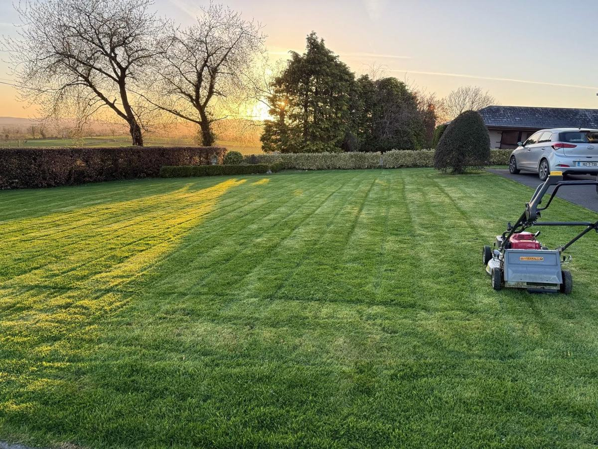
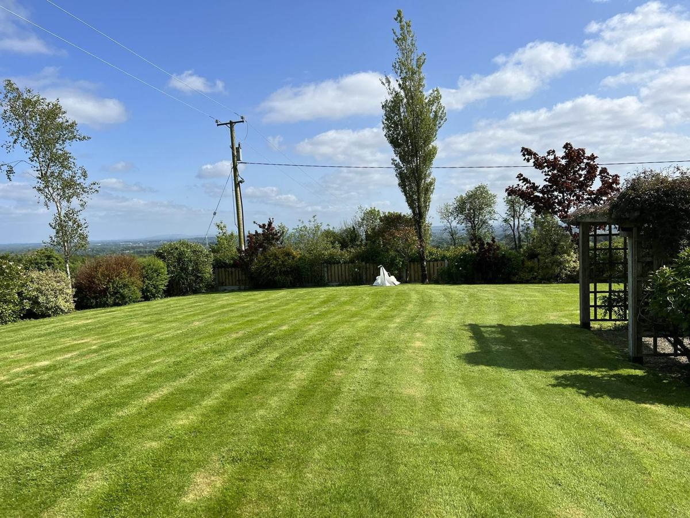
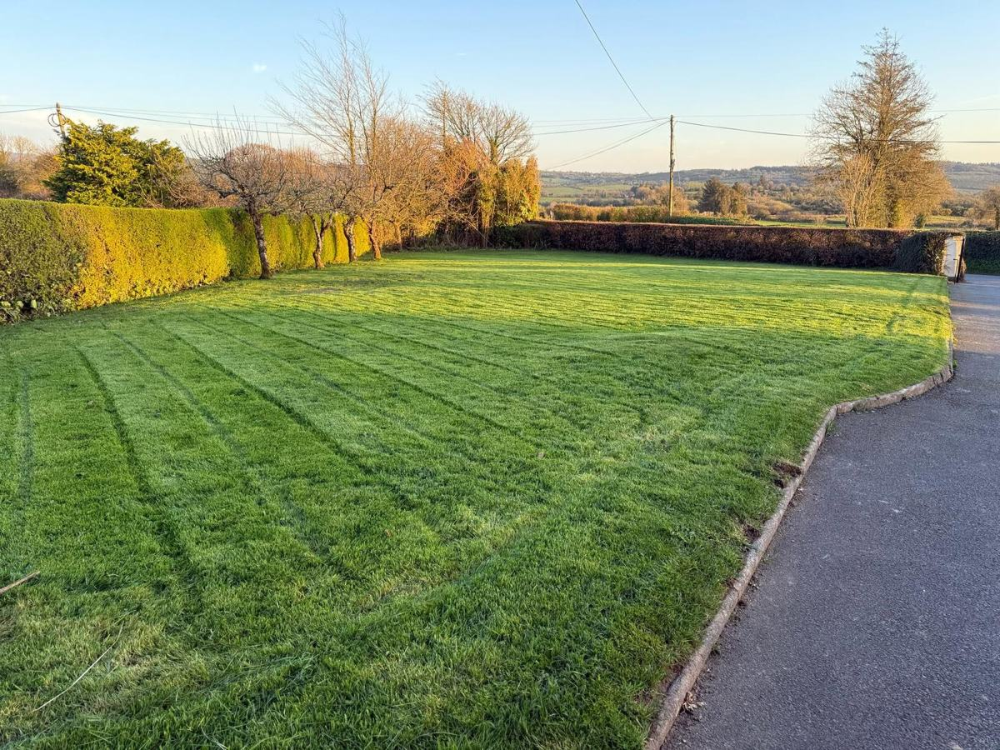

New lawns, regular mowing and estate grounds kept sharp, with the right kit for any size.
Get a free quoteThe LawnRanger lays new lawns and keeps lawns and grounds maintained across Tipperary, Limerick and Clare. From a domestic lawn to large estate and business grounds, we have the ride-on and collection kit to keep any size looking sharp.
One-off cuts, new turf or seed, or a regular schedule, whatever suits. Residents' associations and businesses welcome.
We look at the lawn or grounds and agree a price and schedule.
Ground prepared and levelled, then turf laid or seed sown.
Cut to the right height, edges done, borders tidied.
Clippings collected and removed, not left behind.
One-off, or a regular round to keep it sharp year-round.


We cover Tipperary, Limerick and Clare, including Castletroy, Monaleen, Nenagh, Ennis and the surrounding areas.
Rated 10/10 by customers on Facebook.
Yes, weekly, fortnightly or monthly rounds, or one-off cuts.
Yes, we have ride-on mowers with collection for large areas.
Both. We will advise which suits your garden and budget.
Yes, we collect and remove clippings as standard.
It depends on size and frequency. We give a clear price after a look.
Other services: Artificial grass · Paving & patios · Garden makeovers · Fencing & gates